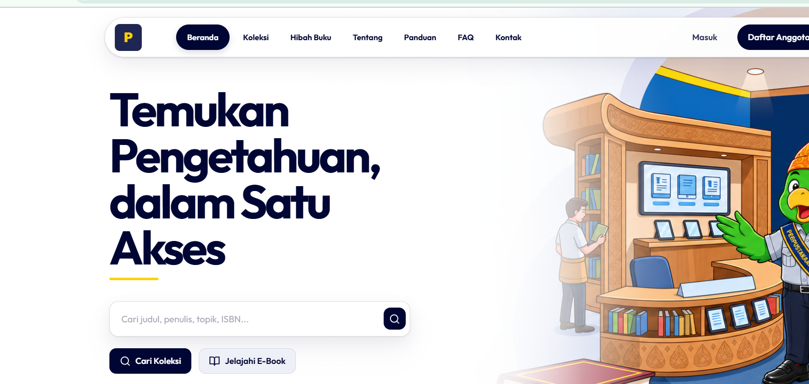

PROJECT 01 / ACADEMIC COLLABORATION
SiBapak Website link
Sistem Informasi Posbankum Berdampak — a collaborative web platform supporting access to Posbankum-related information.
I'm Nadila Eriani Afsri, an Informatics Engineering student and Full-Stack Developer Intern working with web applications, Docker, and Linux server deployment.

I'm an Informatics Engineering student at Politeknik Caltex Riau, currently building practical experience through software development and an internship at Kementerian Hukum Riau.
I enjoy connecting accessible interfaces with backend services, working with databases, and understanding how applications run beyond a local development environment.
Selected projects from academic collaboration and hands-on internship experience.
Sistem Informasi Posbankum Berdampak — a collaborative web platform supporting access to Posbankum-related information.

Full-stack development of the Kemenkum Riau Library Portal using Next.js, NestJS, and MariaDB; containerized with Docker Compose and deployed to a Linux VPS.
From classroom foundations to contributing to real web applications.
Contributing to frontend and backend development, application deployment using Docker Compose and Linux VPS, and troubleshooting during internship projects.
Diploma IV / Bachelor of Applied Science, applying software development knowledge through academic and collaborative projects.
Practical skills from real work, with room to keep growing.
Building responsive interfaces and user-facing experiences using Next.js and React.
Integrating frontend, NestJS backend services, and MariaDB.
Managing multi-service local environments with Docker Compose and deploying to a Linux VPS.
Learning through teamwork, practical problem solving, and project delivery.
Interested in software development, collaboration, or sharing ideas? Feel free to connect.